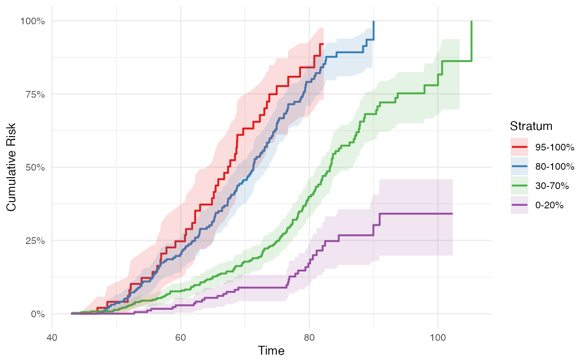
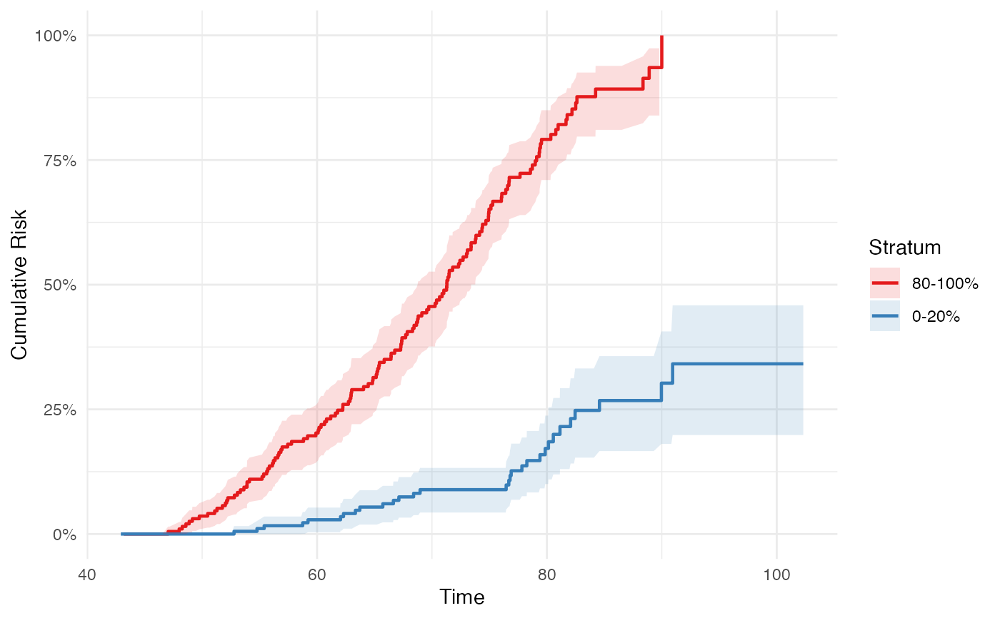

Cumulative incidence (absolute risk) curves stratified by PHS percentile
Source:R/phs_abs_risk.R
phs_abs_risk.RdComputes cumulative incidence curves for PHS percentile-stratified groups using 1 - Kaplan-Meier (method = "km") or the Aalen-Johansen estimator when competing risks are present (method = "aalen_johansen"). Returns a ggplot2 object or a tidy data frame.
Arguments
- data
data.frame with columns specified by
phs,time, andevent- phs
string; column name of the continuous PHS values
- time
string; column name of the time-to-event variable
- event
string; column name of the event indicator (0 = censored, 1 = event of interest)
- competing_event
string or NULL; column name of the competing event indicator (0/1). Required when
method = "aalen_johansen".- intervals
list of
c(lo, hi)pairs defining percentile bands, e.g.list(c(0.80, 1), c(0, 0.20)). Bands may overlap. Default produces four bands matchingphs_km_curve(): top 5 (0.95-1), top 20 (0.80-1), middle 40 (0.30-0.70), and bottom 20 (0-0.20).- ref_data
optional data.frame used as the reference population for computing percentile cutpoints (e.g., a training cohort).
- method
string; estimation method.
"km"(default): cumulative incidence as 1 minus the Kaplan-Meier survival estimate. Appropriate when censoring is independent and no competing risks are present."aalen_johansen": Aalen-Johansen cumulative incidence estimator; recommended when competing risks are present (requirescompeting_event)."fine_gray": stub, not yet implemented.- time_points
numeric vector or NULL; when
output = "data", return estimates interpolated to these specific time points (one row per stratum x time_point combination). When NULL, all event-time rows are returned.- output
string;
"plot"(default) returns a ggplot object,"data"returns a tidy data frame.- conf_int
logical; whether to include confidence intervals (default TRUE).
- conf_int_alpha
numeric; transparency for CI ribbons when plotting (default 0.15).
- palette
string; color palette name (default
"hazrd").- ...
additional arguments (reserved for future use).
Value
A ggplot object when output = "plot", or a tidy data frame when
output = "data". The data frame has columns time, stratum,
risk_estimate, conf.low, conf.high, n.risk, n.event. When
time_points is supplied with output = "data", one row per stratum x
time_point is returned.
Examples
data(test_data)
# Default: cumulative incidence plot (top 5, top 20, middle 40, bottom 20)
phs_abs_risk(test_data)
#> Warning: Removed 2 rows containing missing values or values outside the scale range
#> (`geom_ribbon()`).

# Return tidy data for custom plotting
abs_data <- phs_abs_risk(test_data, output = "data")
# Extract estimates at specific time points
phs_abs_risk(test_data, time_points = c(60, 70, 80), output = "data")
#> time stratum risk_estimate conf.low conf.high n.risk n.event
#> 1 60 95-100% 0.24707317 0.115293115 0.35922415 37 1
#> 2 70 95-100% 0.63219092 0.464673706 0.74728773 17 0
#> 3 80 95-100% 0.84077529 0.670551926 0.92304551 5 0
#> 4 60 80-100% 0.20254505 0.142786038 0.25813808 142 1
#> 5 70 80-100% 0.45628313 0.376124061 0.52614292 86 0
#> 6 80 80-100% 0.79133234 0.709948858 0.84988098 24 0
#> 7 60 30-70% 0.07625721 0.048644740 0.10306824 308 0
#> 8 70 30-70% 0.17768594 0.134482438 0.21873287 217 1
#> 9 80 30-70% 0.39959810 0.330699268 0.46140438 95 1
#> 10 60 0-20% 0.02859979 0.003548203 0.05302157 161 0
#> 11 70 0-20% 0.08894279 0.043071252 0.13261543 120 0
#> 12 80 0-20% 0.17165947 0.100210141 0.23743525 65 0
# Custom intervals
phs_abs_risk(test_data,
intervals = list(c(0.80, 1), c(0, 0.20)))
#> Warning: Removed 1 row containing missing values or values outside the scale range
#> (`geom_ribbon()`).
